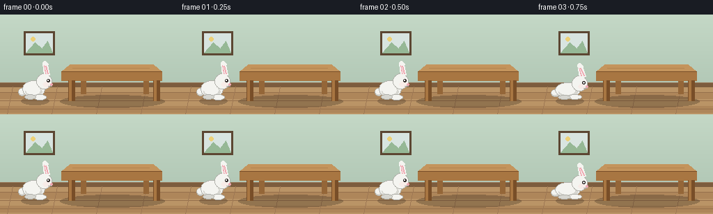
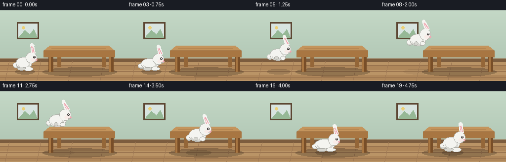

CODING AGENTS AS PIXEL WORLD MODELS
traex/Seed-2.1-Pro-0915 · dynamic_spatial_relationship_0020
点击播放 · 原生 RGB 像素
逐轮保存的候选
回放视频、检查图与代码变化。
每份候选均可单独播放。实际图片检查记录在下方工具轨迹中。
候选 01播放与检查图
点击播放 · 原生 RGB 像素


展开代码变化
--- 上一保存版本
+++ 本次保存版本
@@ -0,0 +1,215 @@
+"""Text-to-video: a rabbit left of a table jumps to the front of the table.
+
+Fully procedural (numpy + PIL only). Renders 20 RGB frames at 256x144, 4 fps.
+"""
+import math
+from pathlib import Path
+
+import numpy as np
+from PIL import Image, ImageDraw
+
+import artifact_io
+
+W, H = 256, 144
+N_FRAMES, FPS = 20, 4.0
+GROUND_Y = 122 # floor contact line for the rabbit and furniture
+CASE_DIR = Path(__file__).parent
+
+# ---- palette --------------------------------------------------------------
+WALL_TOP = (196, 216, 198)
+WALL_BOTTOM = (178, 200, 182)
+FLOOR_A = (186, 148, 102)
+FLOOR_B = (174, 134, 90)
+BASEBOARD = (124, 92, 62)
+WOOD_LIGHT = (196, 148, 92)
+WOOD = (168, 118, 66)
+WOOD_DARK = (120, 78, 40)
+RABBIT = (244, 244, 240)
+RABBIT_SHADE = (214, 214, 208)
+RABBIT_EDGE = (176, 176, 170)
+PINK = (240, 168, 178)
+DARK = (52, 46, 44)
+
+
+def lerp(a, b, t):
+ return a + (b - a) * t
+
+
+def smoothstep(t):
+ return t * t * (3 - 2 * t)
+
+
+# ---- static scene ---------------------------------------------------------
+def make_base():
+ """Wall, floor, picture frame and table; shared by every frame."""
+ img = Image.new("RGB", (W, H))
+ px = img.load()
+ for y in range(H):
+ if y < 102:
+ t = y / 102
+ col = tuple(int(lerp(WALL_TOP[c], WALL_BOTTOM[c], t)) for c in range(3))
+ else:
+ band = 0 if ((y - 102) // 10) % 2 == 0 else 1
+ col = FLOOR_A if band == 0 else FLOOR_B
+ for x in range(W):
+ px[x, y] = col
+
+ d = ImageDraw.Draw(img)
+ # baseboard where wall meets floor
+ d.rectangle([0, 98, W, 104], fill=BASEBOARD)
+ d.line([0, 98, W, 98], fill=(150, 116, 84))
+ # floor plank seams
+ for yy in (112, 124, 136):
+ d.line([0, yy, W, yy], fill=(150, 112, 76))
+ for xx in range(18, W, 64):
+ d.line([xx, 104, xx - 8, H], fill=(158, 120, 84))
+
+ # small framed picture on the wall
+ d.rectangle([34, 24, 78, 58], fill=(92, 70, 50))
+ d.rectangle([37, 27, 75, 55], fill=(216, 228, 224))
+ d.polygon([(37, 55), (50, 40), (60, 49), (68, 38), (75, 55)], fill=(150, 184, 150))
+ d.ellipse([44, 32, 50, 38], fill=(236, 208, 120))
+
+ draw_table(d)
+ return img
+
+
+def draw_table(d):
+ # table shadow on the floor, drawn before the legs so they stay crisp
+ img_ref = d._image
+ shadow = Image.new("RGBA", (W, H), (0, 0, 0, 0))
+ ImageDraw.Draw(shadow).ellipse([86, 116, 236, 134], fill=(40, 30, 20, 70))
+ img_ref.paste(Image.alpha_composite(img_ref.convert("RGBA"), shadow).convert("RGB"), (0, 0))
+
+ # back legs first (slightly darker, partly hidden by the tabletop)
+ for x in (116, 206):
+ d.rectangle([x, 80, x + 7, 114], fill=(148, 102, 56))
+ # tabletop: top face with a little perspective, then front apron
+ d.polygon([(100, 72), (220, 72), (232, 82), (88, 82)], fill=WOOD_LIGHT)
+ d.polygon([(88, 82), (232, 82), (232, 95), (88, 95)], fill=WOOD)
+ d.line([(88, 82), (232, 82)], fill=WOOD_DARK)
+ d.line([(104, 77), (214, 77)], fill=(178, 130, 78)) # wood grain
+ # front legs
+ for x in (98, 220):
+ d.rectangle([x, 95, x + 9, 124], fill=WOOD_DARK)
+ d.rectangle([x + 1, 95, x + 4, 124], fill=WOOD)
+
+
+# ---- rabbit ---------------------------------------------------------------
+def draw_rabbit(canvas, cx, foot_y, s=1.0, tilt=0.0, tuck=0.0, sx=1.0, sy=1.0):
+ """Draw a white rabbit facing right. Origin is the ground contact point."""
+ layer = Image.new("RGBA", (W, H), (0, 0, 0, 0))
+ d = ImageDraw.Draw(layer)
+
+ def ellipse(dx, dy, rx, ry, fill, outline=None):
+ x = cx + dx * s * sx
+ y = foot_y + dy * s * sy
+ d.ellipse([x - rx * s * sx, y - ry * s * sy,
+ x + rx * s * sx, y + ry * s * sy], fill=fill, outline=outline)
+
+ # tail (behind body)
+ ellipse(-18, -10, 5.5, 5.5, RABBIT_SHADE, RABBIT_EDGE)
+ ellipse(-19, -11, 3.5, 3.5, RABBIT)
+
+ # body
+ ellipse(-2, -15, 16, 12, RABBIT, RABBIT_EDGE)
+ ellipse(-2, -11, 12, 7, RABBIT_SHADE)
+ ellipse(-3, -13, 10, 6, RABBIT)
+
+ # feet: stretched when grounded, tucked while airborne
+ if tuck > 0.0:
+ ellipse(6 + 2 * tuck, -5 - 3 * tuck, 7 - 2 * tuck, 4, RABBIT, RABBIT_EDGE)
+ ellipse(-7 + 2 * tuck, -5 - 3 * tuck, 6 - 2 * tuck, 3.5, RABBIT_SHADE, RABBIT_EDGE)
+ else:
+ ellipse(7, -3, 9, 4, RABBIT, RABBIT_EDGE)
+ ellipse(-7, -3, 8, 3.5, RABBIT_SHADE, RABBIT_EDGE)
+
+ # head
+ hx, hy = cx + 13 * s * sx, foot_y - 26 * s * sy
+ hr = 11 * s
+ d.ellipse([hx - hr, hy - hr, hx + hr, hy + hr], fill=RABBIT, outline=RABBIT_EDGE)
+ d.ellipse([hx - 2, hy + 1, hx + 9, hy + 8], fill=(248, 236, 232)) # cheek
+
+ # ears: rounded lines, tilt sweeps the tips backward (negative x)
+ for ex, length, wdt, inner in ((5, 17, 6, False), (11, 15, 5.5, True)):
+ base_x = hx + ex * s * 0.6
+ base_y = hy - hr + 2
+ tip_x = base_x - tilt * 8 * s - (2 * s if inner else 0)
+ tip_y = base_y - length * s
+ d.line([base_x, base_y, tip_x, tip_y], fill=RABBIT,
+ width=max(2, int(wdt * s)))
+ d.ellipse([tip_x - wdt * s / 2, tip_y - wdt * s / 2,
+ tip_x + wdt * s / 2, tip_y + wdt * s / 2], fill=RABBIT)
+ d.line([base_x, base_y - 2, tip_x, tip_y + 2], fill=PINK,
+ width=max(1, int((wdt - 3) * s)))
+
+ # face
+ d.ellipse([hx + 4, hy - 3, hx + 8, hy + 1], fill=DARK)
+ d.ellipse([hx + 5, hy - 2, hx + 6.5, hy - 0.5], fill=(255, 255, 255))
+ d.ellipse([hx + 9, hy + 3, hx + 12, hy + 6], fill=PINK)
+ d.line([hx + 6, hy + 7, hx + 11, hy + 7], fill=RABBIT_EDGE)
+
+ canvas.paste(Image.alpha_composite(canvas.convert("RGBA"), layer).convert("RGB"), (0, 0))
+
+
+def draw_shadow(canvas, cx, lift, s):
+ alpha = int(64 * max(0.25, 1 - lift / 60.0))
+ spread = 1.0 + lift / 90.0
+ layer = Image.new("RGBA", (W, H), (0, 0, 0, 0))
+ rw, rh = 20 * s * spread, 5.5 * s
+ ImageDraw.Draw(layer).ellipse(
+ [cx - rw, GROUND_Y - rh + 3, cx + rw, GROUND_Y + rh + 3],
+ fill=(35, 26, 18, alpha))
+ canvas.paste(Image.alpha_composite(canvas.convert("RGBA"), layer).convert("RGB"), (0, 0))
+
+
+# ---- animation ------------------------------------------------------------
+def render_frame(base, i):
+ img = base.copy()
+ x0, x1 = 50.0, 148.0
+
+ if i <= 2: # idle on the left
+ cx = x0
+ foot_y = GROUND_Y + int(math.sin(i * 1.7) * 0.5)
+ lift = 0
+ s, tilt, tuck, sx, sy = 1.0, 0.15, 0.0, 1.0, 1.0
+ elif i == 3: # crouch before the hop
+ cx = x0
+ foot_y = GROUND_Y
+ lift = 0
+ s, tilt, tuck, sx, sy = 1.0, 0.35, 0.0, 1.12, 0.86
+ elif i <= 15: # airborne arc
+ t = (i - 4) / 11.0
+ e = smoothstep(t)
+ cx = lerp(x0, x1, e)
+ lift = 50 * 4 * t * (1 - t)
+ foot_y = GROUND_Y - lift
+ s = lerp(1.0, 1.07, e)
+ tilt = 0.55 + 0.25 * math.sin(t * math.pi)
+ tuck = 1.0
+ sx, sy = 1.0, 1.0
+ elif i == 16: # landing squash in front
+ cx = x1
+ foot_y = GROUND_Y
+ lift = 0
+ s, tilt, tuck, sx, sy = 1.07, 0.25, 0.0, 1.15, 0.85
+ else: # settled in front of the table
+ cx = x1
+ foot_y = GROUND_Y + int(math.sin((i - 17) * 1.7) * 0.5)
+ lift = 0
+ s, tilt, tuck, sx, sy = 1.07, 0.15, 0.0, 1.0, 1.0
+
+ draw_shadow(img, cx, lift, s)
+ draw_rabbit(img, cx, foot_y, s=s, tilt=tilt, tuck=tuck, sx=sx, sy=sy)
+ return np.asarray(img, dtype=np.uint8)
+
+
+def main():
+ base = make_base()
+ frames = [render_frame(base, i) for i in range(N_FRAMES)]
+ artifact_io.save(np.stack(frames), CASE_DIR)
+ print(f"saved {N_FRAMES} frames at {W}x{H}, {FPS} fps -> {CASE_DIR}")
+
+
+if __name__ == "__main__":
+ main()
可观测工具轨迹
实际执行的命令与返回图片。
命令 1exit 0
/bin/bash -lc 'ls -la && cat prompt.txt && echo "=== RULES ===" && cat GENERATION_RULES.md && echo "=== SPEC ===" && cat task_spec.json'
命令 2exit 0
/bin/bash -lc 'cat artifact_io.py && echo "=== PLAYER ===" && cat player_template.html'
命令 3exit 0
/bin/bash -lc 'cd . && python generate.py && ls -la'
命令 4exit 0
/bin/bash -lc 'cd . && grep -n "lift =" generate.py'
视觉工具实际返回图片 1

保存候选 1 份；完成命令 4 次；可验证图片返回 1 张。原始 API 响应与完整日志保留在本地。